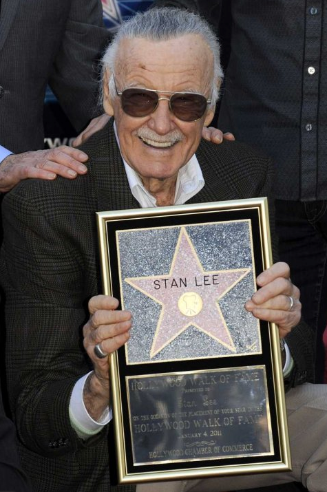

Academy of Science Fiction, Fantasy & Horror Films, USA
In 2002 winner Life Career Award
Burbank International Children's Film Festival
In 2000 winner Lifetime Achievement Award
IMDb Awards
In 2017 winner STARmeter Award
Independent Filmmakers Showcase IFS Film Festival, US
In 2017 winner IFS Award
Jules Verne Awards
In 2007 winner Jules Verne Lifetime Achievement Award
Key Art Awards
In 2013 winner Lifetime Achievement Award
NAVGTR Awards
In 2017 winner NAVGTR Award
PGA Awards
In 2012 winner Vanguard Award
Savannah Film Festival
In 2012 winner Lifetime Achievement Award
Visual Effects Society Awards
In 2012 winner Lifetime Achievement Award
Walk of Fame
In 2012 winner Star on the Walk of Fame